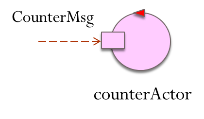

OVERVIEW
- Basic elements of any computation are data and functions (data can be also viewed as functions that return values).
- Functions are first class objects that have a type, can be assigned to variables and used as function arguments or as
return values.
- Computations almost always require the usage of threads and to face concurrency problems, even in multi-core environments.
- Lexical Closures are often used as callbacks in asynchronous (IO-bound) programming according to a Continuation Passing Style (CPS)
- The single-threaded event-loop model of Node.js (JavaScript) leads to the idea of message/job queue.
- On May 2019, Google announced that the
Kotlin programming language
is now its preferred language for Android app developers.
The Android OS is single threaded by default, which means operations will run by default on the UI thread except
they are explicitly scheduled to run on a background thread.
The UI thread is responsible for handling UI updates and executing long running operations on this thread can freeze your app,
or crash the app and show an ANR (Application Not Responding) error.
- The Kotlin concept of coroutine allows us to introduce thread in a very light way. The concept is based on the idea
of suspend a computation without blocking a thread (suspend function) implemented using (under the hoods) a state machine
and CPS.
- Kotlin channels promote interaction among coroutines in term of stream of values.
- Kotlin actors promote a message-based programming style that overcomes traditional procedure-call interaction without
loosing in performance.
To run the
KOTLIN experiments,
use an IDE or
Kotlin Playground.
You can consult also:
Kotlin online
For the examples hereunder, look at
demoBasic.kt (project
it.unibo.kotlinIntro).
Data, Types and Variables
val base : Int = 0 |
Immutable reference. |
var counter = 0 |
Mutable reference. The Type Int is inferred |
val name = "Bob"
val st ="hello$name"
------
println( st ) //Hello Bob
|
String template |
val data : String? = null
val v = data?.length ?: 0
------
println("v=$v") //0
|
Nullable type with safe null access |
val v01 : Any = 23
------
println( "v01 is String=${v01 is String}") //false
println( "v01 is Int=${v01 is Int}") //true
|
Type hierarchy. Any is is a non-nullable type that denotes the root of the Kotlin class hierarchy.
Unit is used as a return type of a function that has nothing to return.
is is a predefined check operator (like Java instanceOf)
|
val v02 : Any = "Bob"
val sv02 = v02 is String
val nv02 = v02 is Int
------
println( "v02 is String=${sv02}") //true
println( "v02 is Int=${nv02}") //false
if (v02 is String) print(v02.length)
|
Smart cast. The compiler tracks the is-checks (and explicit casts) for immutable values and inserts
(safe) casts automatically when needed.
|
//val n = v02.length //ERROR
val n02 = (v02 as String).length
------
println( "$n02") //3
println( "${v02 as Int}") //java.lang.ClassCastException
println( "${v02 as? Int}") //null
val t : Int = v02 as? Int ?: 100
------
println( "$t") //100
|
Explicit casting.
The as operator performs type casting.
The as? operator performs safe type casting.
The ?: is the Elvis operator that provides default values instead of null.
|
val s1 = "a"
var s2 = "a"
------
println( "s1 === s2 : ${s1 === s2} ") //true
println( "s1 == s2 : ${s1 == s2} ") //true
s2 = "b"
------
println( "s1 === s2 : ${s1 === s2} ") //false
s2 = "a"
------
println( "s1 === s2 : ${s1 === s2} ") //true
val fa = java.io.File("a")
val fb = java.io.File("a")
------
println( "fa === fb : ${fa === fb}") //false
println( "fa == fb : ${fa == fb}") //true
|
Referential equality ===
Structural equality ==
(translated into a call of the equals function of the class) |
val aToz = "a".."z"
val q = "q"
------
println( "q in aToz=${q in aToz}") //true
println( "1 in aToz=${"""1""" in aToz}") //false
|
Range created by the .. operator.
The in infix operator performs a belong test. Triple quotes """ do not require escaping chars |
var arr = arrayOf(1,2,3)
------
println( "arr size=${arr.size}")
println( "firstEl=${arr[0]} lastEl=${arr[arr.size-1]}")
|
Array. They are a regular collection class. size is a
Property
|
Utility functions
For the examples hereunder, start from
demoTemplate.kt (project
it.unibo.kotlinIntro)
that introduces:
val cpus = Runtime.getRuntime().availableProcessors();
fun curThread() : String {
return "thread=${Thread.currentThread().name} / nthreads=${Thread.activeCount()}"
}
inline fun measureTimeMillis(block: () -> Unit): Long {
val start = System.currentTimeMillis()
block()
return System.currentTimeMillis() - start
}
Functions
These examples are reported in
demoFun.kt (project
it.unibo.kotlinIntro).
fun fsum(a:Int, b:Int) : Int {
return a+b
}
------
println( " ${fsum(3,6)} " ) //9
|
A Top-level function that returns a value.

|
var fcounter = 0
fun incCounter() : Unit{ fcounter++ }
fun decCounter() { fcounter-- }
------
println( "pre=$fcounter " ) //pre=0
incCounter()
println( "post=$fcounter " ) //post=1
|
Top-level functions that do not return a value. The return type Unit can be omitted

|
fun fsquare(v: Int) = v * v
------
println( fsquare(3) ) //9
|
One line function. Braces can be omitted. Return type can be omitted (it is inferred) |
val ftaction : () -> Unit
//function type (no args, returns nothing (Unit)
val ftsum : ( Int, Int) -> Int
//function type (two args, returns an Int)
val ft greet: (String )-> ()->Unit
//returns another function
|
Function type is just a syntactic sugar for an interface, but the interface cannot be used explicitly.
We can use it to type local variables, properties or arguments.
It is implemented in Java as a FunctionN interface.
A way to provide a value function is to use a function literal:
- Lambda expression
- Anonymous function
|
ftaction= { println("hello") } //lambda expression
------
ftaction() //hello
ftsum = { x:Int, y:Int -> x+y } //lambda expression
val fva = ftsum(1,2)
------
println("fva=$fva") //fva=3
ftgreet = { m: String -> { println(m)} }
------
ftgreet( "Hello World" )() //Hello World
println( { println( "Welcome" ) } ) //() -> kotlin.Unit
println( { println( "Welcome" ) }() ) //Welcome kotlin.Unit
val fel = { print( "Last exp val:" ); 100 }
------
println( "${ fel() }" ) //Last exp val=100
|
Lambda Expression literal
it can be assigned to a variable, just like any other literal.
A call returns (the value of the) last expression |
val faction: ()-> Unit = fun() { println("Hello from faction") }
------
faction() //Hello from faction
val fsquare: (Int)->Int = fun(x) = x * x
------
println("fsquare=${fsquare(3)}") //fsquare=9
val greet: (String)->()->Unit =
fun(m:String) = fun(){ println("Printing $m") }
------
println( greet ) //(kotlin.String) -> () -> kotlin.Unit
println( greet( "Hello World1" ) ) //() -> kotlin.Unit
greet( "Hello World" )( ) //Printing Hello World
------------------------------------------
fun fexec23( op: (Int, Int) : Int ) : Int { return op(2,3) }
val v23 = fexec23( fun(x:Int,y:Int):Int{return x+y} )
------
println("$v23") //5
println( fexec23( { x:Int, y:Int -> x*y } ) ) //6
|
Anonymous function; another way to write a block of code instead of a Lambda expression. Needs return
like any function |
Using lambda
Java 8 introduced lambda expressions along with functional interfaces.
A
functional interface is an interface with a single method. They are commonly referred to as
Single Abstract Method or
SAM.
Lambda expressions represents these functional interfaces in a more concise way, to deal with functional programming.
The examples hereunder are reported in
demoLambda.kt (project
it.unibo.kotlinIntro).
fun exec23( op:(Int,Int) -> Int ) : Int { return op(2,3) }
val sum = { x:Int, y:Int -> x+y }
val mul = { x:Int, y:Int -> x*y }
println("${ exec23(sum) }") //5
println("${ exec23(mul) }") //6
|
Higher order functions. |
val v1 = exec23( { x:Int, y:Int -> x-y } ) //1) no shortcut
------
println("v1=$v1") //v1=-1
val v2 = exec23() { x:Int, y:Int -> x-y } //2) lambda last arg
------
println("v2=$v2") //v2=-1
val v3 = exec23{ x:Int, y:Int -> x-y } //3) () can be removed
------
println("v3=$v3") //v3=-1
val v4 = exec23{ x,y -> x-y } //4) arg types inferred
------
println("v4=$v4") //v4=-1
|
Lambda syntax shortcut |
fun p2( op: ( Int ) -> Int ) : Int { return op(2) }
println( p2( { x:Int-> x*x } ) ) //4
println( p2( ) { x:Int-> x*x } ) //4
println( p2 { x:Int-> x*x } ) //4
println( p2 { x -> x*x } ) //4
println( p2 { it -> it*it } ) //4
println( p2 { it*it } ) //4
println( p2{ it * it / 2 } ) //2
|
Simplification in lambda call
p2 { it*it }
The keyword it is an auto-generated parameter name |
fun modulo(k:Int): (Int) -> Int //SIGNATURE
= { it % k } //BODY
------
println( modulo(3)(5) ) //2
println( modulo(5)(3) ) //3
|
Function as return value. |
|
|
fun sToN( s: String, base: Int=10 ) : Int{
var v = 0
for( i in 0..s.length-1 ) {
v = ( s[i].toInt()-48 ) + v*base
}
return v
}
------
println( " ${ sToN( s="123") } " ) //123
|
Default parameters and Named parameters at call |
fun mirror(v: Int) : Pair<Int,Int> {
return Pair(v, -v)
}
val v = mirror(2)
------
println("${v.first}, ${v.second} ") //2,-2
val(pos,neg) = mirror(3)
------
println( " pos=$pos neg=$neg " ) //pos=3 neg=-3
|
Multiple return values. To extract the values into separate values, we can exploit
destructuring declarations (syntactic sugar)
val(pos,neg) = mirror(3)
|
val sToNref = ::sToN
println( sToNref )
//fun sToN(kotlin.String, kotlin.Int): kotlin.Int
-------------------------
fun add( x:Int, y:Int ) : Int { return x+y }
println( exec23( ::add ) ) //5
val x = (::add)(5,6)
println( x ) //11
|
Function reference. The :: operator creates a member reference or a (statically known) class reference.
The reference is a value of type KClass.
A Kotlin class reference is not the same as a Java class reference. To obtain a Java class reference,
use the .java property on a KClass instance.
|
var str = "Hello World"
str .let { println("$it!!") } //Hello World!!
137 .let { println("$it!!") } //137!!
|
Standard library function let
let takes the object it is invoked upon as the parameter and returns the result of the lambda expression.
It is a scoping function, wherein the variables declared inside the expression cannot be used outside.
|
Closures and Callbacks
These examples are reported in
demoCps.kt (project
it.unibo.kotlinIntro).
fun counterCreate() : ( cmd : String ) -> Int {
var localCounter = 0
return { msg ->
when (msg) {
"inc" -> ++localCounter
"dec" -> --localCounter
"val" -> localCounter
else -> throw Exception( "unknown" )
}
}
}
val c1 = counterCreate()
------
for( i in 1..3 ) c1("inc")
println("c1=${c1("val")}") //c1=3
val c2 = counterCreate() //another instance
------
for( i in 1..3 ) c2("dec")
println("c2=${c2("val")}") //c2=-3
|
Lexical Closures
The closure returned by counterCreate is "closed over" the variable localCounter.
We are reproducing oo programming style (instance and state encapsulation) |
fun doJobCps( n: Int ){
getInputCps( //lambda
{ input : String-> submitCps( n, input, {
msg -> handle( msg )
}
)}//submitCps
)//getInputCps
}
fun getInputCps(callback:( String )-> Unit):Unit{
println("Input ... | ${curThread()}")
callback( "myinputcps" )
}
fun submitCps(v:Int,msg:String,callback:(String)->Unit){
println("Submit ... | ${curThread()}")
callback( "$msg-$v" )
}
fun main() = runBlocking{
println("BEGINS CPU=$cpus ${curThread()}")
doJobCps( 10 )
println("ENDS ${curThread()}")
}
|
Callbacks
Callbacks are quite common in event-loop architectures such as JavaScript.
The idea is to pass one function as a parameter to another function, and have this one invoked once the process has completed.
In order to avoid the anti-pattern known as
callback hell, people use other approaches such as promises or
Reactive Extensions (Rx) (C#, .NET) .
The usage of callbacks leads to the
Continuation-passing style (see CPS),
quite diffused to handle
Asynchronous I/O
//OUPUT
BEGINS thread=main / nthreads=2
Input ... | thread=main / nthreads=2
Submit ... | thread=main / nthreads=2
Handle myinputcps: 10 | thread=main / nthreads=2
ENDS thread=main / nthreads=2
|
fun showAction( msg: String ){
println( msg )
}
fun readAction() : String{
println("readaction ... | ${curThread()}")
return "myinput"
}
fun evalAction( v: Int, msg: String ) : String{
println("evalaction ... | ${curThread()}")
return "$msg:$v"
}
fun doJobNormal(n:Int){ //print- eval-read pattern
val s = readAction()
val v = evalAction( n, s )
showAction( v )
}
-----------------------
doJobNormal(10) //output : myinput:100
}
|
Normal flow
With reference to the set of functions on the left, let us execute a Normal call sequence:
The output is:
//OUPUT
readaction ... | thread=main | nthreads=1
evalaction ... | thread=main | nthreads=1
myinput:100
|
fun showAction( msg: String ){ println( msg ) }
fun readCps( callback:( String )-> Unit ) :Unit {
println("readCps ... | ${curThread()}")
callback:( "myinputcps" )
}
---------------------
readCps( { msg -> showAction(msg) }
|
Callbacks
Callbacks are quite common in event-loop architectures such as JavaScript.
The idea is to pass one function as a parameter to another function, and have this one invoked once the process has completed.
//OUPUT
readCps ... | thread=main | nthreads=1
myinputcps
The usage of callbacks leads to the
Continuation-passing style (see CPS),
which is quite diffused to handle
Asynchronous I/O
|
fun readCps( callback:(String)-> Unit ):Unit{
println("readCps ... | ${curThread()}")
callback( "myinputcps" )
}
fun evalCps(v:Int, msg:String, callback:(String)-> Unit ){
println("evalCps ... | ${curThread()}")
callback( "$msg: $v" )
}
fun doJobCpsNoShortcut( n: Int ){
readCps( //lambda
{ input : String-> evalCps( n, input, {
msg -> showAction( msg )
}
)}//evalCps
)//readCps
}
fun doJobCps( n: Int ){ //using lambda shortcut
readCps{evalCps( n, it) { showAction( it )}}
}
---------------------
doJobCps( 10 }
|
CPS (Continuation Passing Style)
The example on the left trasforms the normal print-eval-read pattern into a
pattern read-and-after-do
//OUPUT
readCps ... | thread=main | nthreads=1
evalCps ... | thread=main | nthreads=1
myinputcps:10
Callback hell
In order to avoid the anti-pattern known as
callback hell, people use other approaches such as promises or
Reactive Extensions (Rx) (C#, .NET) .
|
Towards ASYNCHRONOUS PROGRAMMING
Let us suppose that the operation readCps takes a long time and that we do not want to block
the computation. |
As a solution modern langauages do introduce:
- Threading
- Callbacks
- Futures, Promises et al.
- Reactive Extensions
- Coroutines
|
fun readCpsAsynch( callback:(String)-> Unit ) : Unit{
kotlin.concurrent.thread(start = true) {
println("readCpsAsynch ... | ${curThread()} ")
Thread.sleep(3000) //Long-term action
println("readCpsAsynch received ")
callback( "myinputasynchcps" )
}
}
fun doJobAsynchCps( n: Int ){
readCpsAsynch{evalCps( n, it) { showAction( it )}}
}
--------------------------
doJobAsynchCps( 10 )
This example is reported in demoCpsAsynch.kt (project it.unibo.kotlinIntro).
|
ASYNCHRONOUS PROGRAMMING WITH CPS
As an example of CPS in Asynchronous programming
(see asynchronous ),
let us simulate here the readCpsAsynch operation as an activity that runs in its own thread and ends after 1 sec.
Now, the main program ends immediately; the computation is executed in the thread activated for the input.
//OUPUT
BEGINS CPU=8 thread=main | nthreads=1
work done in time= 6
ENDS thread=main | nthreads=2
readCpsAsynch ... | thread=Thread-0 | nthreads=1
readCpsAsynch received
evalCps ... | thread=Thread-0 | nthreads=2
myinputasynchcps:10
Note the Single Abstract Method conversion
(SAM) in kotlin.concurrent.thread: when an object implements a SAM interface, we can pass a lambda instead.
|
Introduction to coroutines
- Essentially, a Coroutine is a light-weight thread that can be activated with a
Coroutine builder into a CoroutineScope.
-
Coroutines can be executed concurrently using a multi-threaded dispatcher like the
Dispatchers.Default.
It presents all the usual concurrency problems.
See Kotlin Shared mutable state and concurrency.
- By default, coroutines are run on a shared pool of threads.
Threads still exist in a program based on coroutines, but one thread can run many coroutines, so there's no need for too many threads.
-
Kotlin Coroutines enhance asynchronous programming by being lightweight and essentially faster than a thread as they are stackless.
What this means from a multiprocessing perspective, is that Kotlin Coroutines don't map on the native CPU thread,
hence there's no context-switching on the processor.
- The execution of a coroutine always happens inside a Coroutine Context that defines how the coroutine will be executed.
It includes a coroutine Dispatcher.
A Coroutine Context can be composed by several element types.
-
Every coroutine has a context that is represented by an instance of
CoroutineContext interface.
A context is a set of elements and current coroutine context is available via coroutineContext property.
A scope is just a reference to a context.
- Coroutines are computations that can be suspended without blocking a thread.
They are based on the concept of Continuation-passing style (CPS) programming.
- Coroutines do not rely on features of the Operating System or the JVM. Instead, a Continuation is added to every suspending function as
an additional parameter according to the CPS style. The compiler produces a state machine to handle suspension.
-
A coroutine itself is represented by a
Job.
It is responsible for coroutine's lifecycle, cancellation, and parent-child relations.
A current job can be retrieved from a current coroutine's context.
Examples
The examples hereunder are reported in
demoCoroutinesIntro.kt
(project
it.unibo.kotlinIntro).
The main program now waits for a command from the user to select the demo to run:
fun readInt() : Int { print(">"); return readLine()!!.toInt() }
fun doDemo( input : Int ){
println("BEGINS CPU=$cpus ${curThread()}")
when( input ){
1 -> demoTodo = { runBlockThread() }
2 -> demoTodo = { GlobalScope.launch{ runBlockThread() } }
3 -> demoTodo = { scopeDemo() }
4 -> demoTodo = { scopeAsyncDemo() }
...
else -> { println("command unknown") } //Note the block
}
println( "work done in time= ${measureTimeMillis( demoTodo )}" )
println("ENDS ${curThread()}")
}
fun main() {
var input = readInt()
while( input != 0 ){
doDemo( input )
demoTodo = { println("nothing to do") }
input = readInt()
}
println( "BYE")
}
Conventional (Java) code
fun runBlockThread(){
run { //Calls a function block; returns its result
println("thread sleeps ... : ${curThread()}")
Thread.sleep(1500)
println("thread ends: ${curThread()}")
}
}
------------------
runBlockThread()
|
The current Thread (main) waits for 1500 msecs.
//OUTPUT
BEGINS CPU=4 thread=main | nthreads=1
thread sleeps ... : thread=main | nthreads=1
thread ends : thread=main | nthreads=1
work done in time= 1501
ENDS thread=main | nthreads=1
|
GlobalScope
GlobalScope.launch is used to launch top-level coroutines, which operate on the whole application lifetime.
GlobalScope.launch{ runBlockThread() }
|
The runBlockThread is now called in the default Thread devoted to Coroutine execution.
//OUTPUT
BEGINS CPU=4 thread=main | nthreads=1
work done in time= 96
ENDS thread=main | nthreads=3
>thread sleeps ... : thread=DefaultDispatcher-worker-2 | nthreads=4
thread ends : thread= DefaultDispatcher-worker-2 | nthreads=4
Note that the 'program' ends immediately.
The output after > appears since our main waits for input.
|
The example above shows that the coroutine works with reference to the Dispather.Deafault.
A Dispatcher determines the thread in which a coroutine will be executed. It can be provided by the Coroutine Scope
or specified using a builder.
|
On Dispatchers
A dispatcher can be provided in two ways:
- By the coroutine scope.
See also
Coroutine Scope
- Explicitly: the coroutine builder receives a coroutine context as a first parameter.
See Dispatchers later on.
|
CoroutineScope
CoroutineScope. defines a scope for new coroutines.
Every coroutine builder is an extension on CoroutineScope and inherits its coroutineContext to automatically propagate both context elements and cancellation.
fun scopeDemo (){
val scope = CoroutineScope( Dispatchers.Default )
println( scope.coroutineContext )
scope.launch{ runBlockThread() }
}
|
The runBlockThread is now called in a new Coroutine scope.
//OUTPUT
BEGINS CPU=4 thread=main | nthreads=5
[JobImpl{Active}@606d8acf, DefaultDispatcher]
work done in time= 2
ENDS thread=main | nthreads=5
thread sleeps ... : thread=DefaultDispatcher-worker-2 | nthreads=4
>thread ends : thread=DefaultDispatcher-worker-2 | nthreads=4
|
val n=10000 //number of Thread or Coroutines to launch
val k=1000 //times an action is repeated by each Thread or Coroutine
fun manyThreads(){
var counter=0
var iter = 0;
val time = measureTimeMillis{
val jobs = List(n){
Thread(){
run(){
iter++
//println("thread $iter starts ")
repeat( k ){ counter++}
}
}
}
jobs.forEach{ it.start() }
jobs.forEach{ it.join() }
}
println("manyThreads time= $time counter=$counter")
}
|
Many Threads
The function manyThreads activates n=10000 threads; each thread increments a global counter
k=1000 times.
//OUTPUT
BEGINS CPU=4 thread=main | nthreads=1
manyThreads time= 1893 counter=9989342
work done in time= 1897
ENDS thread=main | nthreads=1
Question: why the final value of the counter is not n*k = 10000000?.
|
fun manyCoroutines(){
var counter=0
val time = measureTimeMillis {
val jobs = List(n) {
CoroutineScope( Dispatchers.Default ).launch {
repeat(k) { counter++ }
}
}
CoroutineScope( Dispatchers.Default ).launch {
jobs.forEach { it.join() } //wait for termination of all coroutines
}
}
println("manyCoroutines time= $time counter=$counter")
}
|
Many Coroutines
The function manyCoroutines activates n=10000 coroutines; each coroutine increments a global counter
k=1000 times.
//OUTPUT
BEGINS CPU=4 thread=main | nthreads=1
manyCoroutines time= 151 counter=9875922
work done in time= 152 //!!!!!!!!!!!!!
ENDS thread=main | nthreads=5
The execution time is now much less than the case of using threads.
Question: why the final value of the counter is not n*k = 10000000?.
|
A closer look to coroutines
From
Elizarov we know that:
Suspending functions
The examples hereunder are reported in
demoSuspended.kt (project
it.unibo.kotlinIntro).
launch & runBlocking
runBlocking is a Coroutine Builder wrapper that runs new coroutine and blocks current thread interruptibly until its completion.
Using launch, the coroutine is launched in the
scope of the outer coroutine (that of runBlocking in this case).
fun main() = runBlocking {
println("BEGINS CPU=$cpus ${curThread()}")
launch{ runBlockThread() }
println("ENDS ${curThread()}")
}
|
No Thread.sleep tis required now.
//OUTPUT
BEGINS CPU=4 thread=main | nthreads=1
ENDS thread=main | nthreads=1
thread sleeps ... : thread=main | nthreads=1
thread ends : thread=main | nthreads=1
Since we use launch instead of GlobalScope.launch, then the coroutine is launched in the
scope of the outer runBlocking coroutine.
This is an example of structured concurrency: coroutines confined to different scopes
are more maintainable and manageable.
|
Launch and join
Coroutines started by launch return a Job immediately, which we can use to cancel
the computation or await its completion with join.
fun main() = runBlocking {
println("BEGINS CPU=$cpus ${curThread()}")
val job = launch{ runBlockThread() }
job.join()
println("ENDS ${curThread()}")
}
|
//OUTPUT
BEGINS CPU=4 thread=main | nthreads=1
thread sleeps ... : thread=main | nthreads=1
thread ends : thread=main | nthreads=1
ENDS thread=main | nthreads=1
We can remove the explicit join, since runBlocking won't complete before all of its
child coroutines finish.
|
delay
delay is a special suspending function that does not block a thread, but suspends the work.
A function that can suspend its work cannot be called from a normal function,
but only from another suspend function or from a Coroutine.
suspend fun ioBoundFun(){
val timeElapsed = measureTimeMillis {
println("IO operation | STARTS in ${curThread()}")
delay(1000)
}
println("IO operation | Done, TIME=$timeElapsed")
}
fun main() = runBlocking {
println("BEGINS CPU=$cpus ${curThread()}")
ioBoundFun()
println("BYE")
println("ENDS ${curThread()}")
}
|
//OUTPUT
BEGINS CPU=4 thread=main | nthreads=1
IO operation | STARTS in thread=main | nthreads=1
IO operation | Done, TIME=1021
ENDS thread=main | nthreads=1
If we execute:
fun main() = runBlocking {
launch{ ioBoundFun() }
println("BYE")
}
the output is:
//OUTPUT
BEGINS CPU=4 thread=main | nthreads=1
ENDS thread=main | nthreads=1
IO operation | STARTS in thread=main | nthreads=1
IO operation | Done, TIME=1006
|
Coroutine builder async
The async builder creates new coroutine and returns a promise (also known as future),
(of type Deferred
in Kotlin): it promises to compute a value which we can wait for or request at any time.
suspend fun activate(){
val job1 = CoroutineScope( Dispatchers.Default ).async {
ioBoundFun()
}
val job2 = CoroutineScope( Dispatchers.Default ).async{
ioBoundFun()
}
if(! job1.isCompleted || ! job2.isCompleted)
println("Waiting for completion")
val end1 = job1.await() //only from a coroutine or another suspend
val end2 = job2.await()
println("All jobs done; end1=$end1 end2=$end2")
}
fun main() = runBlocking{
println("BEGINS CPU=$cpus ${curThread()}")
activate()
println("ENDS ${curThread()}")
}
|
The method await on the promise allows us to get the value.
//OUPUT
BEGINS CPU=4 thread=main | nthreads=1
Waiting for completion
IO operation | STARTS in thread=DefaultDispatcher-worker-2 | nthreads=5
IO operation | STARTS in thread=DefaultDispatcher-worker-1 | nthreads=5
IO operation | Done, TIME=1011
IO operation | Done, TIME=1011
All jobs done; end1=kotlin.Unit end2=kotlin.Unit
ENDS thread=main | nthreads=6
|
Channels
Channels provide a way to transfer a
streams of values.
send and
receive are
suspending functions used for providing and consuming objects from the channel, implemented with a
FIFO
strategy.
The sender is suspended when the channel is full
and resumes as soon as the receiver consumes the data. This concept is often referred to as Backpressure and helps to
prevent a channel from being flooded with more elements than the receivers can actually process.
Kotlin defines several types of channels:
Unbuffered Channels:
- RendezvousChannel (the buffer has capacity 0 and the sender suspends until the element is consumed)
Buffered Channels:
- LinkedListChannel
- ArrayChannel
- ConflatedChannel (the buffer has capacity 1 and the sender overrides an element not cosumed)
The examples hereunder are reported in
demoChannels.kt (project
it.unibo.kotlinIntro).
suspend fun channelTest(scope : CoroutineScope){
val n = 5
val channel = Channel<Int>(2)
val sender = scope.launch {
repeat( n ) {
channel.send( it )
println("SENDER | sent $it in ${curThread()}")
}
}
delay(500) //The receiver starts after a while ...
val receiver = scope.launch {
for( i in 1..n ) {
val v = channel.receive()
println("RECEIVER | receives $v in ${curThread()}")
}
}
}
fun main() = runBlocking{
println("BEGINS CPU=$cpus ${curThread()}")
channelTest()
println("ENDS ${curThread()}")
}
|
The example shows the usage of an ArrayChannel of capacity 2.
//OUTPUT
BEGINS CPU=4 thread=main | nthreads=4
SENDER | sent 0 in thread=main | nthreads=4
SENDER | sent 1 in thread=main | nthreads=4
ENDS thread=main | nthreads=4
RECEIVER | receives 0 in thread=main | nthreads=4
RECEIVER | receives 1 in thread=main | nthreads=4
RECEIVER | receives 2 in thread=main | nthreads=4
SENDER | sent 2 in thread=main | nthreads=4
SENDER | sent 3 in thread=main | nthreads=4
SENDER | sent 4 in thread=main | nthreads=4
RECEIVER | receives 3 in thread=main | nthreads=4
RECEIVER | receives 4 in thread=main | nthreads=4
|
Producers-consumers in Kotlin
- The pattern where a coroutine is producing a sequence of elements is quite common.
This is a part of producer-consumer pattern that is often found in concurrent code.
You could abstract such a producer into a function that takes channel as its parameter,
but this goes contrary to common sense that results must be returned from functions.
- There is a convenient coroutine builder named
produce
that makes it easy to do it right on producer side,
and an extension function consumeEach, that replaces a for loop on the consumer side.
- The coroutine builder
produce
is associated with the channel that it sends elements to (a
ReceiveChannel
interface) requires a specific CoroutineContext (as with launch or async) and works as follows:
- suspends after a value is produced and resumes when a new value is requested (similar to suspending sequences and iterators)
- the body of the suspending lambda that is passed can suspend at any point
- a value from a producer can only be received in a suspending computation
- the channel has no buffer by default is closed when the coroutine completes
Coroutine builder produce
val simpleProducer : ReceiveChannel<Int>? = null
fun startProducer(scope : CoroutineScope ){
simpleProducer =
scope.produce {
for( i in 1..3 ){
println( "producer produces $i in ${curThread()}")
send( i )
}
}
suspend fun consume(){
val v = simpleProducer!!.receive()
println( "consume receives ${v} in ${curThread()}" )
simpleProducer!!.consumeEach {
println( "consume receives $it in ${curThread()}" )
}
}
fun main() = runBlocking{
println("BEGINS CPU=$cpus ${curThread()}")
startProducer(this);
consume()
println("ENDS ${curThread()}")
}
|
This example is reported in simpleProducerKotlin.kt
The coroutine builder produce
takes a suspending lambda as a parameter; only the code within this lambda can send items to the channel.
The channel has no buffer by default; it is closed when the coroutine completes
//OUTPUT
BEGINS CPU=4 thread=main | nthreads=1
producer produces 1 in thread=main | nthreads=1
producer produces 2 in thread=main | nthreads=1
consume receives 1 in thread=main | nthreads=1
consume receives 2 in thread=main | nthreads=1
producer produces 3 in thread=main | nthreads=1
consume receives 3 in thread=main | nthreads=1
ENDS thread=main | nthreads=1
|
Many-type producer
val context = newSingleThreadContext("myThread")
var producer : ReceiveChannel? = null
fun createProducer(scope : CoroutineScope ){
producer =
scope.produce(context, 0){
println( "producer sends 5.2 in ${curThread()}")
send(5.2)
println( "producer sends a in ${curThread()}")
send("a")
println( "producer sends 100 in ${curThread()}")
send(100)
}
}
val producer: ReceiveChannel<Any> =
GlobalScope.produce(context, 1){
println( "producer sends 5 in ${curThread()}")
send(5.2)
println( "producer sends a in ${curThread()}")
send("a")
println( "producer sends 100 in ${curThread()}")
send(100)
}
suspend fun doconsume(){
val v = producer!!.receive() //the first item
println( "doconsume receives1 $v in ${curThread()}")
producer!!.consumeEach {
println( "doconsume receives2 $it in ${curThread()}") }
}
|
This example is reported in prodConsKotlin.kt
When channel capacity = 0 (default), the output is:
//OUTPUT
BEGINS CPU=4 thread=main | nthreads=1
producer sends 5.2 in thread=myThread / nthreads=2
producer sends a in thread=myThread / nthreads=2
doconsume receives1 5.2 in thread=main / nthreads=2
doconsume receives2 a in thread=main / nthreads=2
producer sends 100 in thread=myThread / nthreads=2
doconsume receives2 100 in thread=main / nthreads=2
ENDS thread=main | nthreads=2
When channel capacity = 3, the output is:
//OUTPUT
BEGINS CPU=4 thread=main | nthreads=1
producer sends 5.2 in thread=myThread / nthreads=2
producer sends a in thread=myThread / nthreads=2
producer sends 100 in thread=myThread / nthreads=2
doconsume receives1 5.2 in thread=main / nthreads=2
doconsume receives2 a in thread=main / nthreads=2
doconsume receives2 100 in thread=main / nthreads=2
ENDS thread=main | nthreads=2
|
Many consumers
val aProducer:ReceiveChannel<Int>=GlobalScope.produce{
for( i in 1..3 ){
println( "aProducer produces $i in ${curThread()}")
send( i )
}
}
fun consumer1(scope: CoroutineScope){
scope.launch{
delay(100)
val v = aProducer.receive()
println( "consumer1 receives ${v} in ${curThread()}" )
}
}
fun consumer2(scope: CoroutineScope){
scope.launch{
for( i in 1..2 ) {
val v = aProducer.receive()
println("consumer2 receives ${v} in ${curThread()}")
delay(100)
}
}
}
fun main() = runBlocking{
println( "BEGIN")
consumer1(this )
consumer2(this)
println( "END")
}
|
This example is reported in prodManyConsKotlin.kt
The output is:
//OUTPUT
aProducer produces 1 in thread=DefaultDispatcher-worker-1 / nthreads=4
BEGINS CPU=4 thread=main | nthreads=4
ENDS thread=main | nthreads=4
consumer2 receives 1 in thread=main / nthreads=4
aProducer produces 2 in thread=DefaultDispatcher-worker-1 / nthreads=4
aProducer produces 3 in thread=DefaultDispatcher-worker-1 / nthreads=4
consumer1 receives 2 in thread=main / nthreads=4
consumer2 receives 3 in thread=main / nthreads=5
|
- An actor is an entity made up of a combination of a coroutine, the state that is confined and encapsulated into this coroutine,
and a channel to communicate with other coroutines.
- The coroutine builder named actor conveniently combines actor’s mailbox channel into its scope to receive messages from
and combines the send channel into the resulting job object, so that a single reference to the actor can be carried around as its handle.
- The actor coroutine builder is a dual of produce coroutine builder,
since a producer is associated with the channel that it sends elements to.
- This combination of actor-related mechanisms opens the way to the concept of state share by communication.
An example
var senderActor : SendChannel? = null
var receiverActor : SendChannel? = null
fun startReceiver( scope : CoroutineScope){
receiverActor = scope.actor {
//actor is a coroutine builder (dual of produce)
println("receiverActor STARTS")
var msg = channel.receive()
while( msg != "end"){
println("receiverActor receives $msg")
msg = channel.receive()
}
println("receiverActor ENDS")
}
}
fun startSender( scope : CoroutineScope){
senderActor = scope.actor {
//actor is a coroutine builder (dual of produce)
println("senderActor STARTS")
receiverActor!!.send("Hello1")
delay(500)
receiverActor!!.send("Hello2")
delay(500)
receiverActor!!.send("end")
println("senderActor ENDS")
}
}
fun main() = runBlocking{
println("BEGINS CPU=$cpus ${curThread()}")
startReceiver( this )
startSender( this )
println("ENDS ${curThread()}")
}
|
This example is reported in demoActors.kt (project it.unibo.kotlinIntro).
 A Kotlin (experimental)
actor:
A Kotlin (experimental)
actor:
- has type (interface) SendChannel<T>, where T is the type of message it can handle
- confines the access of its state to a single Coroutine
- is associated with the
channel
(unbuffered by default ) that it receives messages from
- modifies the state by handling the messages received on its
channel
- works in a message-driven way
|
An actor working as a counter
class CounterMsg(
val cmd:String,
val response: CompletableDeferred?=null){
}
fun createCounter( scope : CoroutineScope ) : SendChannel {
val counterActor = scope.actor {
var k = 0 //actor state
for (msg in channel) { // iterate over incoming messages
if( k>0 && k % 10000 == 0 && msg.cmd != "GET" )
println("${msg.cmd} | $k in ${curThread()} full=${channel.isFull}")
when ( msg.cmd ) {
"INC" -> k++
"DEC" -> k--
"GET" -> msg.response?.complete(k)
else -> throw Exception( "unknown" )
}
}
}
return counterActor
}
suspend fun getIntialValue(counterActor: SendChannel){
val initVal = CompletableDeferred()
counterActor.send(CounterMsg("GET", initVal))
println("Counter INITIAL VALUE=${initVal.await()}")
}
suspend fun sendManyMessages(
scope : CoroutineScope, counterActor: SendChannel){
scope.manyRun {
counterActor.send( CounterMsg("INC") )
}
val finalVal = CompletableDeferred()
counterActor.send( )CounterMsg("GET", finalVal)))
println("Counter FINAL VALUE= = ${finalVal.await()}")
}
fun main() = runBlocking{
println("BEGINS CPU=$cpus ${curThread()}")
val counterActor = createCounter( this )
getIntialValue( counterActor )
sendManyMessages(this, counterActor)
counterActor.close() //shutdown the actor
println("ENDS ${curThread()}")
}
|
This example is reported in demoActorCounter.kt (project it.unibo.kotlinIntro).

//OUTPUT
BEGINS CPU=4 thread=main | nthreads=1
Counter INITIAL VALUE=0
INC | 10000 in thread=main | nthreads=1 full=true
INC | 20000 in thread=main | nthreads=1 full=true
INC | 30000 in thread=main | nthreads=1 full=true
INC | 40000 in thread=main | nthreads=1 full=true
INC | 50000 in thread=main | nthreads=1 full=true
INC | 60000 in thread=main | nthreads=1 full=true
INC | 70000 in thread=main | nthreads=1 full=true
INC | 80000 in thread=main | nthreads=1 full=true
INC | 90000 in thread=main | nthreads=1 full=true
Completed 100000 actions in 414 ms
Counter FINAL VALUE= = 100000
ENDS thread=main | nthreads=1
|